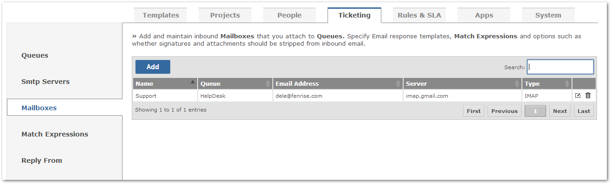
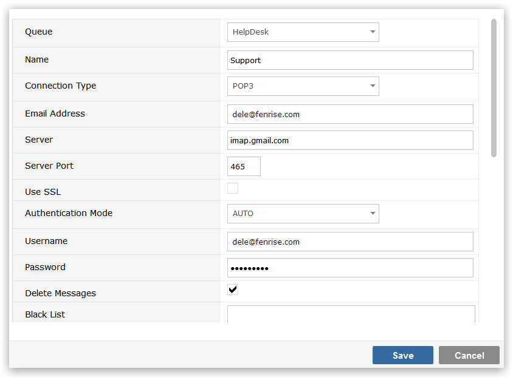

Listening To Mailboxes
Breeze will take emails from a mailbox and turn them into tickets within Gemini.

Multiple mailboxes can be added and you will require some level understanding of POP3, IMAP or Exchange.

- Queue: queue to which this Mailbox belongs
- Name: name you wish to give the Mailbox
- Email Address: email address that this Mailbox processes
- Authentication Mode: one of: AUTO, APOP, REGULAR or NONE
- Username and Password: username and password associated with the email address to be processed
- Connection Type: POP3, IMAP or Exchange
- Server and Port: Server and Port on which the mailbox for the email address resides
- Use SSL: checkbox to indicate if you use SSL
- Delete Messages: checkbox to indicate if messages should be deleted when processed or left on the email server
- Black List: blacklisted email addresses, not to be processed
- No Reply List: email addresses that should not receive a reply from the Mailbox
- Subject 'Like' Expressions: regular Expressionsthat the subject line must match for the email to be processed
- Subject 'Not Like' Expressions: regular Expressions that the subject line must not match for the email to be processed
- Content Replacement Match Expressions: regular Expressions that will result in content being replaced
- Content Truncation Match Expressions: regular Expressions that will result in the email being truncated
- Strip Signature: use algorithms to strip signatures from the inbound email
- Ignore Attachments: do not add attachments from the email to the work item
- Alert Template: Response Template for auto responding to the email sender
- SMTP Server: previously configured SMTP Server
- Use Sender as Reporter: Breeze will use the sender as the reporter of the ticket if the sender's email address can be found in the user list
- Add New Users: this will add new users if the sender's email address doesn't exist in the user list
- Project: field to let you override the project that was set at the Queue level
- Item Type: choose either Project default or a process type for tickets genarated from Breeze
When the configuration is saved it will be immediately validated and a test message sent to you. If there is a problem with the technical configuration you will be shown an error message.